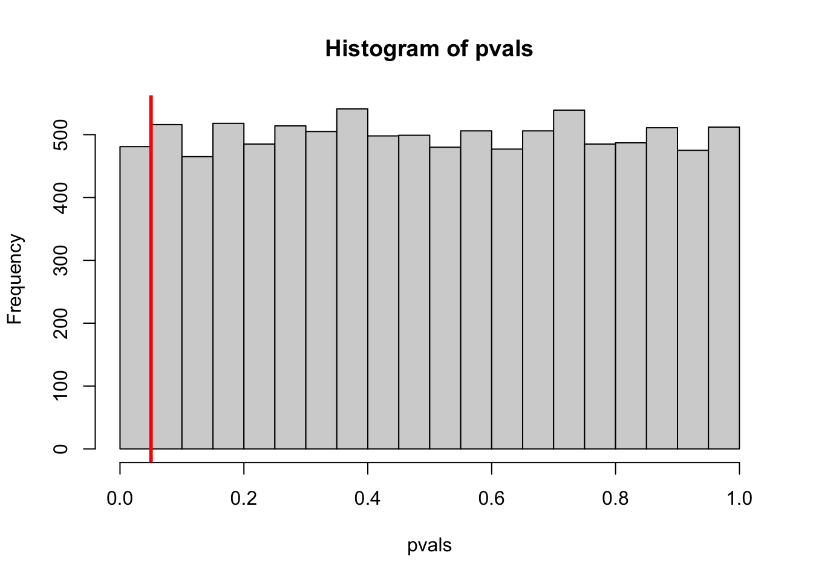

Now that we’ve covered the basics of confidence intervals and p-values, there is a huge world of inference to explore! What follows is a small window into the cautions and best practices of inference, especially with regards to p-values.
11.1 Interpreting p-values
A p-value is the probability of a result that is at least as extreme as the one we observed, given that the null hypothesis is true.
It’s a measure of evidence against the null. We assume that the null is true, then ask how likely our sample would be. There isn’t a problem with our sample, so if it’s unlikely then it must be our assumption that is wrong.
“Given that the null hypothesis is true”
Any interpretation of a p-value that does not assume that the null hypothesis is true is a bad interpretation.
The following interpretations are not valid:
The probability of getting data like this.
Probability of our data by chance alone.
Would be correct if we made reference to the null
The probability that the null hypothesis is true
This is just so wrong, but it unfortunately appears in a lot of published papers.
Always look for wording that assumes that the null is true, and searches for evidence against it.
11.2 Statistical Versus Practical Significance
Suppose a new drug claims to increase your lifespan significantly. Wow! That sounds great!
After hearing this claim, you dig into the paper that made the claim, and found that the drug increases the average lifespan by 3 hours. How can they claim this was significant???
This is the difference between statistical and practical significance. The probability of a result at least as extreme, given that the null hypothesis is true, says nothing of how extreme the results are. A very small effect size can be statistically significant, even if it’s not a noticable change in practice.
Furthermore, maybe this new drug costs $1,000 per day and has intense nausea as a side-effect. A statistically significant difference says absolutely nothing about the practical effects.
p-values were never meant to be the goal of a study.
They are yet another tool in the health researcher’s repertoire, meant to test whether data provide enough evidence against a very particular hypothesis.
11.3 Choosing a Significance Level
To build intuition, we start from the extremes:
A significance level of \(\alpha = 0\) will never reject the null hypothesis.
No amount of evidence will convince you.
A siginficance level of \(\alpha = 1\) will always reject the null hypothesis.
Any evidence will convince you.
When setting a confidence level, you must consider how much evidence you require. To quote Carl Sagan: “Extraordinary claims require extraordinary evidence.”
Here are some examples:
A new cancer treatment costs 10 times as much and the patient will never heal back to 100% health. To justify such a procedure, we want to be reeeeeaaaaalllly sure that it works, so we might set a significance level of \(\alpha=0.001\) before we collect any data.
We are making a slight change to an advertising strategy that is based on scientific evidence. We’re fairly certain it will work, and the consequences of it not working are very small. A larger significance level, perhaps \(\alpha = 0.1\), might be appropriate.
\(\alpha = 0.1\) is probably the largest significance level you will ever encounter.
üëΩ Aliens example: There‚Äôs an abberation in an image taken by a digital camera. According to the manufacturer, such an abberation would occur in 0.0001% of the pictures. If we think it‚Äôs aliens, that‚Äôs an extraordinary claim! We‚Äôd need some very strong evidence. Do you think that 0.0001% is strong enough? (We‚Äôll return to this later in the chapter.)
11.4 Hypothesis Errors
When you test a hypothesis, there are two types of errors: You could reject when the null is true or you could fail to reject when the null is false. The following matrix summarises this:
H_0 is TRUE
H_0 is FALSE
Don’t Reject
Good!
Type 2 Error
Reject
Type 1 Error
Good!
In other words:
Type 1: False Positive
Type 2: False Negative
There’s another important point here: rejecting the null hypothesis does not mean that it’s actually false! Any number of things might have happened, such as including an outlier or taking a biased sample.
Similarly, failing to reject a null does not mean that it’s true. We’ve already talked about this a bit - confidence intervals are all values that would not be rejected by a hypothesis test, so there are many plausible null hypotheses! However, we can also fail to reject the null even though it’s false. This can also happen for multiple reasons:
Sample size is too small.
The distance between the null and the sample mean is calculated relative to the standard error. The standard error decreases with a larger sample, so if our sample isn’t big enough then we might not have collected enough evidence to reject the null, regardless of whether it’s true.
Large variability in the data.
This is the other thing that can increase the standard error. With more variation, the distance between the null and the sample mean doesn’t seem as large!
We can fix this with better sampling strategies and with better study designs, or by getting a larger sample size!
Our significance level is too high.
This isn’t really something that we can change after we’ve seen the data.1
The Probability of Type 1 Errors
What’s the probability your reject the null, even though it’s true? Let’s say we reject the null if the p-value is, say, less than 5%. This means that any value in the 5% tails of the distribution would lead to us rejecting the null hypothesis - even though it’s true!2 The probability that we do this is 5%, since there’s a 5% chance that we’ll see a value that is “too unlikey” at the 5% level.
As usual, I like to demonstrate things via simulation. Here’s the setup:
Set the population parameters as \(\mu = 0\) and \(\sigma = 1\)
Simulate normal data
Do a two sided test for \(H_0: \mu = 0\)
Note that this null hypothesis is TRUE
Count how many times we reject the null.
set.seed(21); par(mar =c(2,2,1,1)) # unimportant## set an empty vector, to be filled with p-valuespvals <-c() for(i in1:10000){ # repeat 10,000 times# Simulate 30 normal values with a population mean of 0 and sd of 1 newsample <-rnorm(n =30, mean =0, sd =1)# Test whether the population mean is 0 newsample_mean <-mean(newsample) newsample_sd <-1/sqrt(30) # Assuming population sd is known my_z_test <-2* (1-pnorm(abs(newsample_mean), mean =0, sd = newsample_sd))# record the p-value (the output of t.test has some hidden values) pvals[i] <- my_z_test}## Testing at the 5% levelsum(pvals <0.05) /length(pvals) # should be close to 0.05
[1] 0.0481
Since we’re testing at the 5% level, this value is close to 5%! It’s a little tricky to get your head around: If we think 5% is too unlikely, then we reject the null. However, things that have “only” a 5% chance happen about 5% of the time!
The histogram below shows all of the p-values we generated. The 5% cutoff isn’t anything special - a test at the 10% level will falsely reject the null 10% of the time. A test at the 90% level will falsely reject the null 90% of the time!
## Fun fact: under the null hyothesis, all p-values are equally likely## this fun fact is not relevant to this course.hist(pvals, breaks =seq(0, 1, 0.05))abline(v =0.05, col ="red", lwd =3)

The Probability of Type 2 Errors
For a two-sided test, our hypotheses are: \[\begin{align*}
H_0: \mu &= \mu_0\\
H_A: \mu &\ne \mu_0\\
\end{align*}\]
If the null is actually false3, what’s \(\mu\)? All we know is that it isn’t\(\mu_0\).4 It could be a little above \(\mu_0\), in which case it might be hard to reject \(\mu_0\). It could be a far above \(\mu_0\), in which case it might be easy to reject \(\mu_0\).
Easy to reject \(\mu_0\) since it’s so far from \(\mu\) (high power)
Hard to not reject the false \(\mu_0\) (low Type 2)
Power is our ability to correctly reject a false null hypothesis, and is defined as 1 - P(Type 2 Error)
Note that these examples are both missing the Standard Error, which incorporates sample size. The power depends on the distance between \(\mu\) and \(\mu_0\) relative to the standard error, not just the population standard deviation. We can partially control the standard error by having a better study design5 and a larger sample size, both of which would give us more power.
Power by Simulation (DIY)
The following code calculates the power. Run it many times, changing \(\mu_0\), \(\sigma\), and \(n\) to see what happens to the power.
## Set parametersmu <-0# don't change this, but change the other parametersmu_0 <-0.1sigma <-0.5n <-50## Record p-valsp_vals <-c()for(i in1:10000){ newsample <-rnorm(n, mu, sigma) p_vals[i] <-2* (1-pnorm(abs(mean(newsample)), 0, sigma/sqrt(n)))}## The proportion of times the null was (correctly) rejectedmean(p_vals <0.05) # Power
[1] 0.0483
mean(p_vals >0.05) # P(Type 2 Error)
[1] 0.9517
11.5 Multiple Comparisons
Suppose we have a coin that’s heads 5% of the time. What’s the probability of at least one heads in 10 flips?
As we saw in previous lectures: P(at least 1 heads in 10 flips) = 1 - P(no heads in 10 flips). We can calculate this in R:
1-dbinom(0, size =10, prob =0.05)
[1] 0.4012631
Why did I do go back to flipping coins? Did I forget which chapter I’m in?
Consider the following problem:
Suppose you’re testing 10 hypotheses at the 5% level. Assuming all of the null hypotheses are true, what’s the probability that at least one of them is significant?
Since we’re testing at the 5% level, P(Type 1 Error) = 0.05, so
P(\(\ge\) 1 rejection in 10 hypotheses) =
1-dbinom(0, size =10, prob =0.05)
[1] 0.4012631
In other words, there’s about a 40% chance that we’d get at least one significant result even though all of the null hypotheses are true.6
The Multiple Comparisons Problem
When checking more than one hypothesis, the probability of an error increases!
This happens for both Type 1 and Type 2 errors, but is especially important for Type 1 errors. If you test \(n\) errors at the \(\alpha\)% level, then the probability of a Type 1 error is \(1 -(1 - \alpha)^n\).
So how do we avoid the multiple comparisons problem? There are generally two ways to do it:
Set a Family-Wise Error Rate, rather than an error rate for individual hypothesis tests.
If you’re going to check 10 p-values, use a smaller cutoff.
There are several ways to do this, with the most popular being the Bonferroni correction: for m values, a cutoff of \(\alpha/m\) will result in rejecting at least one test \(\alpha\)% of the time. For example, if you want a test at the 5% level but you’re testing 10 values, you should reject any individual hypothesis only if the p-value is less than \(\alpha/m = 0.05/10\).
Only check one p-value!
For most studies, you should have single, well-defined hypothesis. State this hypothesis ahead of time, do all of your data preparation and get it loaded into R, then only test that hypothesis.
If you check a second hypothesis, then your significance level is a lie! Testing two true null hypotheses at the 5% level will result in a significant result 9.75% of the time.
Failure to account for multiple hypothesis testing is bad science and it’s a path to the dark side. Consider this fantastic tool by fivethirtyeight. Play around with it - by checking a bunch of hypotheses, you can hack your way into finding one that supports your own point of view! In this particular example, your goal is to prove that either (a) the economy does better when a democrat in the white house or (b) the economy does better when a republican is in the white house. Both of these can be demonstrated with a statistically significant result if you check enough hypotheses!
Let‚Äôs return to the üëΩ aliens example. We observed an abberation that only happens in 0.0001% of the pictures taken. However, we took thousands of pictures! Even though this event is rare, it had many chances to happen. This is exactly what multiple hypothesis testing is demonstrating: rare events will happen if you give them enough chances! Rejecting the null when it is actually true is a rare event, but it can easily happen if we check a lot of p-values!
11.6 Summary
Type 1 Error: Reject a true null
Probability is \(\alpha\)
Type 2 Error: Fail to reject a false null
Probability depends on the distance between \(\mu\) and \(\mu_0\), relative to the standard error. In more advanced classes, you will calculate this or have something to calculate it for you.
Multiple comparisons problem: The more hypotheses you test, the more likely it is that at least one of them is falsely labelled significant.
To prevent this, stop checking so many p-values or adjust your expectations!
11.7 Self-Study Questions
We set up the null hypotheses as “nothing interesting is going on”. In light of this, explain why power is a good thing.
If we’re testing 5 hypotheses, what significance level should we use for each such that P(at least one type 1 error) = 0.05?
If we have the hypotheses \(H_0:\mu = 1\) versus \(H_0:\mu = 2\), we can directly calculate the power. Run the following code to open the Shiny app, and interpret the results.